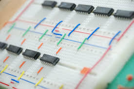

Solução Proposta
O Xiu é composto por:
- Sensor de som KY-037
- Arduino Uno R3
- Protoboard
- LEDs
- Jumpers
Esses componentes trabalham juntos para captar ruídos e sinalizar com LEDs.
Componentes Utilizados
Confira os componentes utilizados na solução:
Sensor de Som KY-037
O Módulo Sensor Detector de Som e Ruído KY-037 é um módulo composto por um circuito integrado LM393 que atua como comparador, um trimpot (um pequeno potenciômetro) para ao ajuste da sensibilidade de detecção sonora, e um microfone condensador elétrico de capacitância extremamente sensível à sons e ruídos. O módulo KY-037 possui duas saídas, sendo uma delas analógica e a outra digital. A saída analógica sofre variação de acordo com a intensidade dos sons, atuando com uma grande precisão na captura por meio do microfone, e atua disponibilizando tensão analógica reconhecível pelo Arduino. A saída digital atua como uma chave on/off, emitindo assim dois possíveis níveis lógicos ao Arduino, sendo ou nível lógico alto ou baixo segundo a intensidade do som ou do ruído capturado.
Arduino Uno R3

É uma placa microcontroladora. Ela possui 20 pinos digitais de entrada/saída de dados (dos quais 7 podem ser usados como saída PWM e 12 podem ser usados como entradas analógicas), possui um cristal oscilador de 16MHz, uma conexão Micro USB, um conector estilo P4 para conexão de fonte externa, conector para ICSP e um botão reset. Preparada para simplesmente ser conectada com o cabo micro USB ou alimentando a placa via fonte externa.
Protoboard
É uma placa de ensaio que serve para criar e prototipagem de circuitos eletrônicos, com possibilitando construir circuitos de teste sem que haja necessidade de solda e, assim, garantindo a praticidade e segurança para diferentes atividades. Logo, serve como um instrumento de teste: antes de se soldar na placa, você testa no protótipo, e, se tudo der certo, parte para o projeto final.
LEDs
O termo LED “Light Emitting Diode” (Diodo Emissor de Luz, em português). Esse componente converte eletricidade em luz. A estrutura básica de um LED é composta por dois terminais semicondutores chamados ânodo e cátodo.
Jumpers
Jumpers, são pequenos pedacinhos de fio condutor utilizados em eletrônica e engenharia de prototipagem para estabelecer conexões entre pontos na protoboard. Geralmente são usados durante a fase de prototipagem para testes. Os fios geralmente são feitos de cobre revestido de isolamento plástico, o que os torna flexíveis e fáceis de manusear.